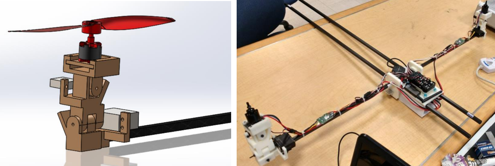

Projects
Hardware and control systems projects from my PhD, master's research, and internships, spanning transformable aircraft, learning-based control, and mechanism design.
MorphoCopter
Transformable quad–bi copter: design, modeling, and control of a UAV with mid-flight transformation capability for enhanced reachability in challenging, ultra-narrow terrains.
- Designed a novel 7-DOF airframe that transforms between quad- and bi-copter configurations mid-flight using a single servo motor.
- Modeled the transforming dynamics and designed attitude/trajectory controllers, first validated in a custom Gazebo simulation to protect hardware from risky early tuning.
- Built and flight-tested a working prototype to validate the transformable design concept; results published in IEEE/ASME Transactions on Mechatronics (2025).
Disturbance Estimation
Iterative Learning Control (ILC) with Disturbance Observer (DOB): robust estimation and suppression of disturbances in UAVs using learning among systems with mismatched dynamics.
- Combined ILC with a Disturbance Observer to estimate and suppress disturbances by learning across systems with mismatched dynamics.
- Validated the framework on quadrotor UAVs using system identification experiments, mathematical modeling, and Vicon motion capture ground truth.
- Reduced disturbance estimation and trajectory tracking error by 80–90% versus baseline; published in IEEE Robotics and Automation Letters (2024).
Pendulum-on-UAV Control
Pendulum-on-UAV control: developed a novel algorithm to control oscillations of an unactuated pendulum attached to a quadrotor, achieving high repeatability in target-hitting tasks.
- Designed a robust ROS-based controller with failsafe logic for precise quadrotor trajectory tracking.
- Developed a control strategy to gradually build pendulum oscillation energy and release it to strike a target through a hoop, reaching 90% task repeatability.
- Built a gimbal-based attitude test rig with rotary-encoder ground truth to validate attitude estimation and sensor fusion algorithms.

VTOL Fixed-Wing UAV
NTU Summer Internship: designed and manufactured a mechanism for a vertical takeoff and landing UAV with a bicopter mechanism, enabling smooth transition between hover and fixed-wing flight modes.
- Designed a mechanism enabling smooth hover-to-fixed-wing transition, optimized for coincident thrust/rotation axes and compact packaging.
- Verified strength margins through stress and deformation analysis in ANSYS across design iterations.
- Additively manufactured the final mechanism, assembled Pixhawk/ESC/BLDC hardware, and ran ground tests of roll/pitch/yaw control.